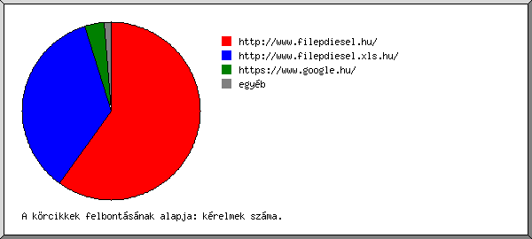

Web Szerver Statisztika: [www.filepdiesel.hu]
Web Szerver Statisztika: [www.filepdiesel.hu]
Futás kezdete vas, 2016. feb. 21. 00:53.
Kérelmek analizálva: csüt, 2016. jan. 14. 11:34 - vas, 2016. feb. 21. 00:37 (37,54 nap).
Web Szerver Statisztika: [www.filepdiesel.hu]Futás kezdete vas, 2016. feb. 21. 00:53.
Kérelmek analizálva: csüt, 2016. jan. 14. 11:34 - vas, 2016. feb. 21. 00:37 (37,54 nap).
(Ugrás: Oldal teteje | Általános összesítés | Éves Jelentés | Havi jelentés | Heti jelentés | Napi jelentés | Napi összesítés | Óránkénti összesítés | Domain szerinti jelentés | Szervezet szerinti jelentés | Host szerinti jelentés | Hivatkozó site-ok jelentése | Böngészõk szerinti összesítés | A böngészõ operációs rendszere szerinti jelentés | Fájltípus szerinti jelentés | Könyvtár szerinti jelentés | Kérelem szerinti jelentés)
A zárójeles számok utalnak: 7 nap 2016. feb. 21. 00:53.
Összes sikeres kérelem: 16.193 (1.790)
Átlagos sikeres napi kérelem: 431 (255)
Összes sikeres oldal kérelem: 588 (1)
Átlagos sikeres napi oldal kérelem: 15
Sikertelen kérelem: 3.373 (719)
Átirányított kérelem: 428 (79)
Különbözõ kért fájlok: 509 (110)
Különbözõ kiszolgált host-ok: 1.107 (291)
Hibás sorok a naplófájlban: 72
Átvitt adat: 464,75 megabyte (59,46 megabyte)
Átlagos napi adatátvitel: 12,38 megabyte (8,49 megabyte)
(Ugrás: Oldal teteje | Általános összesítés | Éves Jelentés | Havi jelentés | Heti jelentés | Napi jelentés | Napi összesítés | Óránkénti összesítés | Domain szerinti jelentés | Szervezet szerinti jelentés | Host szerinti jelentés | Hivatkozó site-ok jelentése | Böngészõk szerinti összesítés | A böngészõ operációs rendszere szerinti jelentés | Fájltípus szerinti jelentés | Könyvtár szerinti jelentés | Kérelem szerinti jelentés)
Minden egység ( ) 15 oldal kérelmeit vagy egy részét jelképezi.
) 15 oldal kérelmeit vagy egy részét jelképezi.
| év | kér. | oldal | |
|---|---|---|---|
| 2016 | 16193 | 588 |   |
Legaktívabb év: 2016 (588 oldal kérelmeit).
(Ugrás: Oldal teteje | Általános összesítés | Éves Jelentés | Havi jelentés | Heti jelentés | Napi jelentés | Napi összesítés | Óránkénti összesítés | Domain szerinti jelentés | Szervezet szerinti jelentés | Host szerinti jelentés | Hivatkozó site-ok jelentése | Böngészõk szerinti összesítés | A böngészõ operációs rendszere szerinti jelentés | Fájltípus szerinti jelentés | Könyvtár szerinti jelentés | Kérelem szerinti jelentés)
Minden egység () 15 oldal kérelmeit vagy egy részét jelképezi.
| hónap | kér. | oldal | |
|---|---|---|---|
| 2016. jan . | 7392 | 501 |  |
| 2016. feb . | 8801 | 87 |  |
Legforgalmasabb hónap: 2016. jan. (501 oldal kérelmeit).
(Ugrás: Oldal teteje | Általános összesítés | Éves Jelentés | Havi jelentés | Heti jelentés | Napi jelentés | Napi összesítés | Óránkénti összesítés | Domain szerinti jelentés | Szervezet szerinti jelentés | Host szerinti jelentés | Hivatkozó site-ok jelentése | Böngészõk szerinti összesítés | A böngészõ operációs rendszere szerinti jelentés | Fájltípus szerinti jelentés | Könyvtár szerinti jelentés | Kérelem szerinti jelentés)
Minden egység () 8 oldal kérelmeit vagy egy részét jelképezi.
| hét eleje | kér. | oldal | |
|---|---|---|---|
| 16.jan .10 | 1466 | 52 | |
| 16.jan .17 | 2879 | 265 | |
| 16.jan .24 | 1946 | 87 | |
| 16.jan .31 | 6226 | 172 |  |
| 16.feb . 7 | 1884 | 11 | |
| 16.feb .14 | 1790 | 1 | |
| 16.feb .21 | 2 | 0 |
Legforgalmasabb hét: hét eleje 16.jan.17 (265 oldal kérelmeit).
(Ugrás: Oldal teteje | Általános összesítés | Éves Jelentés | Havi jelentés | Heti jelentés | Napi jelentés | Napi összesítés | Óránkénti összesítés | Domain szerinti jelentés | Szervezet szerinti jelentés | Host szerinti jelentés | Hivatkozó site-ok jelentése | Böngészõk szerinti összesítés | A böngészõ operációs rendszere szerinti jelentés | Fájltípus szerinti jelentés | Könyvtár szerinti jelentés | Kérelem szerinti jelentés)
Minden egység () 5 oldal kérelmeit vagy egy részét jelképezi.
| dátum | kér. | oldal | |
|---|---|---|---|
| 16.jan .14 | 1420 | 52 | |
| 16.jan .15 | 20 | 0 | |
| 16.jan .16 | 26 | 0 | |
| 16.jan .17 | 0 | 0 | |
| 16.jan .18 | 17 | 0 | |
| 16.jan .19 | 512 | 4 | |
| 16.jan .20 | 1687 | 191 | |
| 16.jan .21 | 587 | 70 | |
| 16.jan .22 | 76 | 0 | |
| 16.jan .23 | 0 | 0 | |
| 16.jan .24 | 0 | 0 | |
| 16.jan .25 | 0 | 0 | |
| 16.jan .26 | 0 | 0 | |
| 16.jan .27 | 108 | 4 | |
| 16.jan .28 | 420 | 81 | |
| 16.jan .29 | 773 | 0 | |
| 16.jan .30 | 645 | 2 | |
| 16.jan .31 | 1101 | 97 | |
| 16.feb . 1 | 1202 | 14 | |
| 16.feb . 2 | 1275 | 27 | |
| 16.feb . 3 | 1777 | 23 | |
| 16.feb . 4 | 351 | 0 | |
| 16.feb . 5 | 407 | 11 | |
| 16.feb . 6 | 113 | 0 | |
| 16.feb . 7 | 276 | 11 | |
| 16.feb . 8 | 516 | 0 | |
| 16.feb . 9 | 235 | 0 | |
| 16.feb .10 | 294 | 0 | |
| 16.feb .11 | 219 | 0 | |
| 16.feb .12 | 207 | 0 | |
| 16.feb .13 | 137 | 0 | |
| 16.feb .14 | 140 | 0 | |
| 16.feb .15 | 364 | 0 | |
| 16.feb .16 | 328 | 1 | |
| 16.feb .17 | 212 | 0 | |
| 16.feb .18 | 316 | 0 | |
| 16.feb .19 | 262 | 0 | |
| 16.feb .20 | 168 | 0 | |
| 16.feb .21 | 2 | 0 |
Legforgalmasabb nap: 16.jan.20 (191 oldal kérelmeit).
(Ugrás: Oldal teteje | Általános összesítés | Éves Jelentés | Havi jelentés | Heti jelentés | Napi jelentés | Napi összesítés | Óránkénti összesítés | Domain szerinti jelentés | Szervezet szerinti jelentés | Host szerinti jelentés | Hivatkozó site-ok jelentése | Böngészõk szerinti összesítés | A böngészõ operációs rendszere szerinti jelentés | Fájltípus szerinti jelentés | Könyvtár szerinti jelentés | Kérelem szerinti jelentés)
Minden egység () 5 oldal kérelmeit vagy egy részét jelképezi.
| nap | kér. | oldal | |
|---|---|---|---|
| vas | 1519 | 108 | |
| hét | 2099 | 14 | |
| kedd | 2350 | 32 | |
| sze | 4078 | 218 | |
| csüt | 3313 | 203 | |
| pén | 1745 | 11 | |
| szo | 1089 | 2 | |
(Ugrás: Oldal teteje | Általános összesítés | Éves Jelentés | Havi jelentés | Heti jelentés | Napi jelentés | Napi összesítés | Óránkénti összesítés | Domain szerinti jelentés | Szervezet szerinti jelentés | Host szerinti jelentés | Hivatkozó site-ok jelentése | Böngészõk szerinti összesítés | A böngészõ operációs rendszere szerinti jelentés | Fájltípus szerinti jelentés | Könyvtár szerinti jelentés | Kérelem szerinti jelentés)
Minden egység () 4 oldal kérelmeit vagy egy részét jelképezi.
| ó. | kér. | oldal | |
|---|---|---|---|
| 0 | 163 | 3 | |
| 1 | 215 | 0 | |
| 2 | 194 | 0 | |
| 3 | 107 | 0 | |
| 4 | 163 | 2 | |
| 5 | 47 | 0 | |
| 6 | 156 | 0 | |
| 7 | 256 | 0 | |
| 8 | 472 | 0 | |
| 9 | 754 | 14 | |
| 10 | 708 | 5 | |
| 11 | 960 | 7 | |
| 12 | 899 | 23 | |
| 13 | 747 | 61 | |
| 14 | 1673 | 108 | |
| 15 | 2048 | 152 | |
| 16 | 1245 | 44 | |
| 17 | 864 | 34 | |
| 18 | 670 | 13 | |
| 19 | 979 | 51 | |
| 20 | 1309 | 42 | |
| 21 | 848 | 27 | |
| 22 | 442 | 2 | |
| 23 | 274 | 0 |
(Ugrás: Oldal teteje | Általános összesítés | Éves Jelentés | Havi jelentés | Heti jelentés | Napi jelentés | Napi összesítés | Óránkénti összesítés | Domain szerinti jelentés | Szervezet szerinti jelentés | Host szerinti jelentés | Hivatkozó site-ok jelentése | Böngészõk szerinti összesítés | A böngészõ operációs rendszere szerinti jelentés | Fájltípus szerinti jelentés | Könyvtár szerinti jelentés | Kérelem szerinti jelentés)
domain listázása, rendezve: forgalom.
| kér. | %byte | domain |
|---|---|---|
| 13747 | 84,09% | .hu (Hungary) |
| 942 | 7,94% | [feloldatlan IP-címek] |
| 764 | 3,36% | .com (Commercial) |
| 235 | 1,35% | .net (Networks) |
| 161 | 0,95% | .de (Germany) |
| 51 | 0,57% | .ro (Romania) |
| 37 | 0,40% | .at (Austria) |
| 31 | 0,30% | .sk (Slovakia) |
| 21 | 0,24% | .cz (Czech Republic) |
| 23 | 0,18% | .fr (France) |
| 17 | 0,15% | .fi (Finland) |
| 15 | 0,14% | .be (Belgium) |
| 17 | 0,14% | .io (British Indian Ocean Territory) |
| 10 | 0,07% | .ru (Russia) |
| 53 | 0,04% | [ismeretlen domain] |
| 4 | 0,01% | .nl (Netherlands) |
| 3 | 0,01% | .bg (Bulgaria) |
| 3 | 0,01% | .hr (Croatia) |
| 3 | 0,01% | .pl (Poland) |
| 2 | 0,01% | .kz (Kazakhstan) |
| 2 | 0,01% | .by (Belarus) |
| 2 | 0,01% | .ps (Occupied Palestinian Territory) |
| 2 | 0,01% | .it (Italy) |
| 22 | .ch (Switzerland) | |
| 1 | .br (Brazil) | |
| 1 | .dz (Algeria) | |
| 1 | .lt (Lithuania) | |
| 1 | .pt (Portugal) | |
| 1 | .md (Moldova) | |
| 1 | .ar (Argentina) | |
| 1 | .es (Spain) | |
| 1 | .aw (Aruba) | |
| 1 | .gr (Greece) | |
| 8 | .ua (Ukraine) | |
| 4 | .biz (Businesses) | |
| 2 | .tv (Tuvalu) | |
| 1 | .nu (Niue) | |
| 1 | .us (United States) | |
| 1 | .sc (Seychelles) |
(Ugrás: Oldal teteje | Általános összesítés | Éves Jelentés | Havi jelentés | Heti jelentés | Napi jelentés | Napi összesítés | Óránkénti összesítés | Domain szerinti jelentés | Szervezet szerinti jelentés | Host szerinti jelentés | Hivatkozó site-ok jelentése | Böngészõk szerinti összesítés | A böngészõ operációs rendszere szerinti jelentés | Fájltípus szerinti jelentés | Könyvtár szerinti jelentés | Kérelem szerinti jelentés)
Az elsõ 20 szervezet listázása a következõ szerint: kérelmek száma, rendezve: kérelmek száma.
| kér. | %byte | szervezet |
|---|---|---|
| 6984 | 29,67% | broadband.hu |
| 1797 | 15,85% | telekom.hu |
| 1192 | 5,57% | mobillan.hu |
| 936 | 7,75% | t-online.hu |
| 507 | 4,34% | digikabel.hu |
| 251 | 2,30% | vodafone.hu |
| 247 | 0,54% | msn.com |
| 245 | 2,18% | invitel.hu |
| 195 | 2,04% | monornet.hu |
| 141 | 1,23% | fibernet.hu |
| 110 | 0,72% | tolna.net |
| 102 | 0,82% | boscolo.com |
| 97 | 0,45% | google.com |
| 89 | 0,58% | szivarvanynet.hu |
| 86 | 0,97% | 78 |
| 86 | 0,88% | prtelecom.hu |
| 84 | 0,54% | telenor.hu |
| 82 | 0,80% | hdsnet.hu |
| 80 | 0,88% | 91 |
| 73 | 0,06% | yandex.com |
| 2809 | 21,82% | [nincs felsorolva: 262 szervezet] |
(Ugrás: Oldal teteje | Általános összesítés | Éves Jelentés | Havi jelentés | Heti jelentés | Napi jelentés | Napi összesítés | Óránkénti összesítés | Domain szerinti jelentés | Szervezet szerinti jelentés | Host szerinti jelentés | Hivatkozó site-ok jelentése | Böngészõk szerinti összesítés | A böngészõ operációs rendszere szerinti jelentés | Fájltípus szerinti jelentés | Könyvtár szerinti jelentés | Kérelem szerinti jelentés)
Az elsõ 50 host listázása a következõ szerint: kérelmek száma, betûrend szerint rendezve.
| kér. | %byte | host |
|---|---|---|
| 37 | 0,46% | 64.74.215.100 |
| 34 | 0,41% | 78.108.16.130 |
| 36 | 0,30% | 82.141.130.246 |
| 37 | 0,29% | 176.118.42.20 |
| 32 | 0,30% | 185.27.62.138 |
| 46 | 0,31% | 188.94.136.148 |
| 62 | 0,21% | 212.92.21.170 |
| 102 | 0,82% | newyork.boscolo.com |
| 31 | 0,09% | google-proxy-66-249-93-55.google.com |
| 40 | 0,25% | google-proxy-66-249-93-57.google.com |
| 46 | 0,04% | spider-141-8-132-3.yandex.com |
| 66 | 0,48% | http-v.fe.bosch.de |
| 33 | 0,18% | hsi-kbw-091-089-199-128.hsi2.kabel-badenwuerttemberg.de |
| 34 | 0,31% | titanccr24.acenet.hu |
| 54 | 0,39% | 109-74-53-155.acetelecom.hu |
| 32 | 0,19% | business-80-98-64-198.business.broadband.hu |
| 62 | 0,47% | catv-178-48-149-176.catv.broadband.hu |
| 40 | 0,26% | catv-78-139-39-19.catv.broadband.hu |
| 1497 | 8,37% | catv-80-98-142-252.catv.broadband.hu |
| 3813 | 12,70% | catv-80-98-219-68.catv.broadband.hu |
| 35 | 0,18% | catv-80-99-187-113.catv.broadband.hu |
| 36 | 0,17% | catv-89-133-244-8.catv.broadband.hu |
| 788 | 0,82% | catv-89-135-141-88.catv.broadband.hu |
| 35 | 0,13% | jak-gw.datatrans.hu |
| 30 | 0,18% | 92-249-234-84.pool.digikabel.hu |
| 39 | 0,30% | 94-21-194-139.pool.digikabel.hu |
| 40 | 0,32% | fibhost-66-198-62.fibernet.hu |
| 35 | 0,34% | 78-131-0-162.core.hdsnet.hu |
| 40 | 0,17% | 79.120.161.71.pool.invitel.hu |
| 43 | 0,27% | catv-77-110-128-189.latsat.hu |
| 63 | 0,60% | sorompo.mavinformatika.hu |
| 376 | 1,11% | host-185-11-174-203.mobillan.hu |
| 224 | 1,69% | host-185-11-174-210.mobillan.hu |
| 481 | 2,60% | host-185-11-174-73.mobillan.hu |
| 111 | 0,17% | host-185-11-175-163.mobillan.hu |
| 36 | 0,40% | adsl-89-132-10-31.monradsl.monornet.hu |
| 46 | 0,20% | mars3.szivarvanynet.hu |
| 44 | 0,31% | dslbc06a314.fixip.t-online.hu |
| 31 | 0,30% | catv4e5ca8dc.pool.t-online.hu |
| 138 | 0,84% | dsl4e5c23d4.pool.t-online.hu |
| 33 | 0,15% | dsl51b61485.pool.t-online.hu |
| 44 | 0,45% | 2e6b391a.catv.pool.telekom.hu |
| 36 | 0,12% | 2e6b7f61.catv.pool.telekom.hu |
| 68 | 0,60% | 86ff6923.dsl.pool.telekom.hu |
| 61 | 0,35% | 86ff42cc.mobile.pool.telekom.hu |
| 34 | 0,19% | 254c6379.nat.pool.telekom.hu |
| 33 | 0,20% | h179-231.pool77-110.dyn.tolna.net |
| 33 | 0,19% | h185-215.pool77-110.dyn.tolna.net |
| 39 | 0,17% | subscr-103.pool-221.varsat.net |
| 31 | 0,01% | b110038.yse.yahoo.net |
| 6976 | 59,63% | [nincs felsorolva: 1.057 host] |
(Ugrás: Oldal teteje | Általános összesítés | Éves Jelentés | Havi jelentés | Heti jelentés | Napi jelentés | Napi összesítés | Óránkénti összesítés | Domain szerinti jelentés | Szervezet szerinti jelentés | Host szerinti jelentés | Hivatkozó site-ok jelentése | Böngészõk szerinti összesítés | A böngészõ operációs rendszere szerinti jelentés | Fájltípus szerinti jelentés | Könyvtár szerinti jelentés | Kérelem szerinti jelentés)

Az elsõ 30 hivatkozó site listázása a következõ szerint: kérelmek száma, rendezve: kérelmek száma.
| kér. | site |
|---|---|
| 9031 | http://www.filepdiesel.hu/ |
| 5380 | http://www.filepdiesel.xls.hu/ |
| 529 | https://www.google.hu/ |
| 21 | https://www.bing.com/ |
| 20 | http://webcache.googleusercontent.com/ |
| 15 | http://www.google.hu/ |
| 13 | https://www.google.ro/ |
| 13 | https://www.google.com.ua/ |
| 10 | http://www.bing.com/ |
| 8 | https://www.google.bg/ |
| 7 | https://www.google.sk/ |
| 6 | https://www.google.at/ |
| 6 | https://www.google.es/ |
| 5 | https://www.google.pl/ |
| 5 | https://www.google.it/ |
| 5 | https://www.google.fi/ |
| 5 | https://www.google.rs/ |
| 4 | https://www.google.nl/ |
| 4 | https://translate.googleusercontent.com/ |
| 3 | https://www.google.com/ |
| 3 | https://www.google.ru/ |
| 3 | http://www.farmacodns.com/ |
| 2 | https://www.google.hr/ |
| 2 | https://www.google.ps/ |
| 2 | https://www.google.me/ |
| 2 | https://www.google.ba/ |
| 1 | https://www.google.lt/ |
| 1 | http://incoming.neoone.com/ |
| 1 | https://cn.bing.com/ |
| 1 | https://www.google.co.il/ |
| 13 | [nincs felsorolva: 13 site] |
(Ugrás: Oldal teteje | Általános összesítés | Éves Jelentés | Havi jelentés | Heti jelentés | Napi jelentés | Napi összesítés | Óránkénti összesítés | Domain szerinti jelentés | Szervezet szerinti jelentés | Host szerinti jelentés | Hivatkozó site-ok jelentése | Böngészõk szerinti összesítés | A böngészõ operációs rendszere szerinti jelentés | Fájltípus szerinti jelentés | Könyvtár szerinti jelentés | Kérelem szerinti jelentés)

böngészõ listázása legalább 1 oldal kérelmet, rendezve: oldalkérelem-szám.
| srsz. | kér. | oldal | böngészõ |
|---|---|---|---|
| 1 | 11570 | 552 | Safari |
| 10844 | 552 | Safari/537 | |
| 2 | 3392 | 27 | Firefox |
| 2232 | 27 | Firefox/43 | |
| 3 | 548 | 5 | Netscape (compatible) |
| 4 | 379 | 3 | Mozilla |
| 5 | 184 | 1 | MSIE |
| 1 | 1 | MSIE/5 | |
| 118 | 0 | [nincs felsorolva: 11 böngészõ] |
(Ugrás: Oldal teteje | Általános összesítés | Éves Jelentés | Havi jelentés | Heti jelentés | Napi jelentés | Napi összesítés | Óránkénti összesítés | Domain szerinti jelentés | Szervezet szerinti jelentés | Host szerinti jelentés | Hivatkozó site-ok jelentése | Böngészõk szerinti összesítés | A böngészõ operációs rendszere szerinti jelentés | Fájltípus szerinti jelentés | Könyvtár szerinti jelentés | Kérelem szerinti jelentés)
op.rsz. listázása, rendezve: oldalkérelem-szám.
| srsz. | kér. | oldal | op.rsz. |
|---|---|---|---|
| 1 | 13495 | 578 | Windows |
| 8372 | 424 | ismeretlen verziójú Windows | |
| 4165 | 143 | Windows NT | |
| 954 | 10 | Windows XP | |
| 1 | 1 | Windows 98 | |
| 2 | 0 | Windows 2000 | |
| 1 | 0 | Windows Server 2003 | |
| 2 | 1719 | 5 | Unix |
| 1719 | 5 | Linux | |
| 3 | 506 | 5 | ismeretlen operációs rendszer |
| 4 | 77 | 0 | keresõrobotok |
| 5 | 394 | 0 | Macintosh |
(Ugrás: Oldal teteje | Általános összesítés | Éves Jelentés | Havi jelentés | Heti jelentés | Napi jelentés | Napi összesítés | Óránkénti összesítés | Domain szerinti jelentés | Szervezet szerinti jelentés | Host szerinti jelentés | Hivatkozó site-ok jelentése | Böngészõk szerinti összesítés | A böngészõ operációs rendszere szerinti jelentés | Fájltípus szerinti jelentés | Könyvtár szerinti jelentés | Kérelem szerinti jelentés)
kiterjesztés listázása legalább 0,1% forgalommal, rendezve: forgalom.
| kér. | %byte | kiterjesztés |
|---|---|---|
| 5378 | 59,93% | .png |
| 1805 | 27,44% | .js |
| 2570 | 7,98% | .jpg |
| 1389 | 2,81% | .css |
| 1896 | 0,71% | .json |
| 15 | 0,47% | .woff |
| 1226 | 0,38% | .gif |
| 3 | 0,13% | .swf |
| 1911 | 0,15% | [nincs felsorolva: 7 kiterjesztés] |
(Ugrás: Oldal teteje | Általános összesítés | Éves Jelentés | Havi jelentés | Heti jelentés | Napi jelentés | Napi összesítés | Óránkénti összesítés | Domain szerinti jelentés | Szervezet szerinti jelentés | Host szerinti jelentés | Hivatkozó site-ok jelentése | Böngészõk szerinti összesítés | A böngészõ operációs rendszere szerinti jelentés | Fájltípus szerinti jelentés | Könyvtár szerinti jelentés | Kérelem szerinti jelentés)
könyvtar listázása legalább 0,01% forgalommal, rendezve: forgalom.
| kér. | %byte | könyvtár |
|---|---|---|
| 3265 | 57,76% | /images/ |
| 2814 | 28,83% | [fõkönyvtár] |
| 1269 | 5,18% | /files/ |
| 1049 | 2,58% | /img/ |
| 732 | 2,49% | /themes/ |
| 4570 | 2,04% | /js/ |
| 1170 | 0,64% | /admin/ |
| 74 | 0,17% | /regioldal/ |
| 572 | 0,12% | /tevekenysegek/ |
| 262 | 0,09% | /kapcsolat/ |
| 202 | 0,06% | /tortenet/ |
| 95 | 0,02% | /linkek/ |
| 119 | 0,01% | [nincs felsorolva: 7 könyvtár] |
(Ugrás: Oldal teteje | Általános összesítés | Éves Jelentés | Havi jelentés | Heti jelentés | Napi jelentés | Napi összesítés | Óránkénti összesítés | Domain szerinti jelentés | Szervezet szerinti jelentés | Host szerinti jelentés | Hivatkozó site-ok jelentése | Böngészõk szerinti összesítés | A böngészõ operációs rendszere szerinti jelentés | Fájltípus szerinti jelentés | Könyvtár szerinti jelentés | Kérelem szerinti jelentés)
fájl listázása legalább 20 kérelem, rendezve: kérelmek száma.
| kér. | %byte | utolsó alkalom | fájl |
|---|---|---|---|
| 1082 | 2,63% | 16.feb .20 22:47 | /styles.css |
| 1054 | 26,11% | 16.feb .20 22:47 | /javas.js |
| 965 | 0,04% | 16.feb .20 22:47 | /js/highslide/imamges/zoomout.cur |
| 960 | 0,19% | 16.feb .20 22:47 | /js/highslide/imamges/outlines/drop-shadow.png |
| 943 | 0,09% | 16.feb .20 22:47 | /js/highslide/imamges/loader.white.gif |
| 791 | 50,55% | 16.feb .20 22:47 | /images/header.png |
| 726 | 0,65% | 16.feb .20 22:47 | /images/menu_pic.png |
| 678 | 1,68% | 16.feb .20 22:47 | /themes/default/images/favicon.png |
| 564 | 1,78% | 16.feb .20 22:47 | /images/info.png |
| 560 | 0,22% | 16.feb .20 22:47 | /js/highslide/imamges/close.png |
| 441 | 0,33% | 16.feb . 7 17:44 | /admin/index.json |
| 117 | 0,04% | 16.feb . 7 17:44 | /admin/index.json?oldal=szmenu&mode=kateg&p_id=1&level=1 |
| 83 | 0,11% | 16.jan .31 17:33 | /admin/index.json?oldal=szmenu |
| 39 | 0,01% | 16.jan .31 17:33 | /admin/index.json?oldal=szmenu&mode=kateg&p_id=102&level=2 |
| 24 | 0,03% | 16.feb . 7 17:44 | /admin/index.json?oldal=szmenu&mode=kateg&p_id=1&level=1&szmid=122&xMode=szmMod |
| 12 | 16.feb . 2 21:27 | /admin/index.json?oldal=szmenu&mode=kateg&p_id=122&level=2 | |
| 12 | 0,01% | 16.jan .31 17:25 | /admin/index.json?oldal=szmenu&mode=kateg&p_id=102&level=2&xMode=szmNew |
| 12 | 0,02% | 16.feb . 7 17:42 | /admin/index.json?oldal=szmenu&mode=kateg&p_id=1&level=1&szmid=101&xMode=szmMod |
| 11 | 16.feb . 7 17:44 | /admin/index.json?logout=1 | |
| 10 | 16.jan .31 19:28 | /admin/index.json?oldal=szmenu&mode=kateg&p_id=108&level=2 | |
| 10 | 16.jan .20 15:59 | /admin/index.json?oldal=default&mode=sys-config | |
| 10 | 0,01% | 16.jan .31 20:38 | /admin/index.json?oldal=szmenu&mode=kateg&p_id=1&level=1&szmid=108&xMode=szmMod |
| 408 | 4,04% | 16.feb .20 22:47 | /images/404.png |
| 357 | 0,01% | 16.feb .20 21:54 | /robots.txt |
| 332 | 2,02% | 16.feb .20 20:32 | /files/images/kishartridge.jpg |
| 328 | 1,17% | 16.feb .20 20:32 | /files/images/kisbosch.jpg |
| 299 | 0,02% | 16.feb .20 16:39 | /images/mobil-icon-menu.png |
| 253 | 0,08% | 16.feb .20 22:33 | /kapcsolat/index.json |
| 251 | 16.feb . 7 17:44 | /admin/reurl_jsc.php | |
| 238 | 0,08% | 16.feb .20 22:33 | /index.json |
| 202 | 0,06% | 16.feb .20 22:32 | /tortenet/index.json |
| 143 | 0,36% | 16.feb .20 23:52 | /img/denso/2028.jpg |
| 134 | 0,18% | 16.feb .19 22:33 | /images/wait.gif |
| 122 | 0,08% | 16.jan .19 11:19 | /images/footer-bg.jpg |
| 120 | 0,32% | 16.jan .19 11:32 | /images/html-bg.png |
| 119 | 0,30% | 16.feb .21 00:34 | /img/denso/2066.jpg |
| 96 | 0,02% | 16.feb .20 22:33 | /tevekenysegek/bosch/index.json |
| 95 | 0,02% | 16.feb .20 22:33 | /linkek/index.json |
| 88 | 0,01% | 16.feb . 7 17:40 | /js/tiny_mce/plugins/tinybrowser/tb_tinymce.js.php |
| 88 | 1,25% | 16.feb .20 22:32 | /files/images/tortenet1.jpg |
| 87 | 0,41% | 16.feb .20 22:32 | /files/images/tortenet2.jpg |
| 77 | 0,19% | 16.feb .20 23:48 | /img/denso/2060.jpg |
| 75 | 0,02% | 16.feb .20 10:22 | /tevekenysegek/arajanlat/index.json |
| 72 | 0,02% | 16.feb . 7 17:40 | /admin/ |
| 30 | 0,01% | 16.feb . 7 17:40 | /admin/?login=1 |
| 63 | 0,15% | 16.feb . 7 17:40 | /admin/styles.css |
| 62 | 0,01% | 16.jan .20 12:02 | /kezdolap/index.json |
| 59 | 16.feb . 7 17:40 | /admin/javas.js | |
| 54 | 0,01% | 16.feb .20 20:32 | /tevekenysegek/delphi-lucas/index.json |
| 54 | 0,02% | 16.feb . 7 17:40 | /admin/pic/favico.png |
| 50 | 0,03% | 16.feb .20 20:32 | /files/images/lucaslogo.jpg |
| 49 | 0,01% | 16.feb .20 10:22 | /tevekenysegek/denso/index.json |
| 48 | 0,01% | 16.jan .20 00:12 | /images/bodyback.png |
| 46 | 0,01% | 16.feb .20 10:22 | /tevekenysegek/siemens/index.json |
| 45 | 0,11% | 16.feb .20 21:05 | /img/delphi/2017.jpg |
| 40 | 0,01% | 16.jan .31 19:23 | /js/tiny_mce/plugins/tinybrowser/css/style_tinybrowser.css.php |
| 40 | 16.feb . 5 12:22 | /admin/pic/bg.jpg | |
| 40 | 16.feb . 5 12:22 | /admin/pic/menu1_bg.jpg | |
| 39 | 16.jan .31 19:23 | /js/tiny_mce/plugins/tinybrowser/js/tinybrowser.js.php | |
| 32 | 16.jan .31 19:22 | /js/tiny_mce/plugins/tinybrowser/js/tinybrowser.js.php? | |
| 39 | 0,01% | 16.feb . 7 17:40 | /js/html5.js |
| 39 | 0,02% | 16.feb . 7 17:40 | /js/jquery.crypt.js |
| 39 | 0,19% | 16.feb . 7 17:40 | /js/jquery.js |
| 39 | 0,01% | 16.feb . 7 17:40 | /js/maps-generator.js |
| 39 | 0,02% | 16.feb . 7 17:40 | /js/colorpicker/colorpicker.js |
| 39 | 0,44% | 16.feb . 7 17:40 | /js/tiny_mce/tiny_mce.js |
| 39 | 0,15% | 16.feb . 7 17:40 | /js/highslide/highslide.js |
| 39 | 0,05% | 16.feb . 7 17:40 | /admin/admin.js |
| 39 | 0,28% | 16.feb . 7 17:40 | /js/jquery-ui.js |
| 37 | 0,12% | 16.feb .20 10:22 | /files/images/tortenet3.jpg |
| 36 | 0,09% | 16.feb .20 21:20 | /img/delphi2.jpg |
| 35 | 0,01% | 16.feb .20 10:22 | /tevekenysegek/mindennapjaink/index.json |
| 33 | 0,08% | 16.feb .16 20:06 | /img/denso2.jpg |
| 33 | 0,01% | 16.feb .14 15:08 | /tevekenysegek/zexel/forgoelosztos-rendszeru-porlasztok/index.json |
| 33 | 0,02% | 16.jan .31 19:22 | /js/tiny_mce/plugins/tinybrowser/tinybrowser.php |
| 21 | 0,01% | 16.jan .31 19:22 | /js/tiny_mce/plugins/tinybrowser/tinybrowser.php?type=image |
| 11 | 16.jan .28 15:06 | /js/tiny_mce/plugins/tinybrowser/tinybrowser.php?type=image&viewtype=thumb&sortby=name&sorttype=asc | |
| 32 | 0,07% | 16.feb .21 00:37 | /img/zexelforgoel.jpg |
| 30 | 0,08% | 16.feb .20 09:43 | /img/bosch/forgomech.jpg |
| 30 | 16.feb . 7 17:40 | /admin/pic/icon-save.png | |
| 29 | 0,01% | 16.feb .14 15:08 | /tevekenysegek/zexel/vrz-radial-dugattyus-rendszeru-adagolok/index.json |
| 26 | 16.feb . 7 17:40 | /css-reset.css | |
| 26 | 16.feb . 7 17:40 | /#moduls/default/frontend/mystyle.css | |
| 26 | 16.feb . 7 17:40 | /js/tiny_mce/themes/advanced/skins/o2k7/content.css | |
| 26 | 16.feb . 7 17:40 | /css-admin.css | |
| 26 | 16.feb . 7 17:40 | /themes/default/fonts/fonts.css | |
| 25 | 0,04% | 16.feb .20 12:02 | /img/porlasztok/hh701.jpg |
| 23 | 16.jan .20 11:16 | /tevekenysegek/zexel/index.json | |
| 22 | 16.feb . 7 17:40 | /js/tiny_mce/plugins/advlink/editor_plugin.js | |
| 22 | 0,02% | 16.feb . 7 17:40 | /js/tiny_mce/plugins/inlinepopups/editor_plugin.js |
| 22 | 0,01% | 16.feb . 7 17:40 | /js/tiny_mce/plugins/inlinepopups/skins/clearlooks2/window.css |
| 22 | 0,03% | 16.feb . 7 17:40 | /js/tiny_mce/themes/advanced/editor_template.js |
| 22 | 0,01% | 16.feb . 7 17:40 | /admin/pic/info.png |
| 22 | 16.feb . 7 17:40 | /js/tiny_mce/themes/advanced/skins/o2k7/ui_silver.css | |
| 22 | 16.feb . 7 17:40 | /js/tiny_mce/plugins/advimage/editor_plugin.js | |
| 22 | 16.feb . 7 17:40 | /js/tiny_mce/themes/advanced/langs/hu.js | |
| 22 | 0,01% | 16.feb . 7 17:40 | /js/tiny_mce/langs/hu.js |
| 22 | 0,01% | 16.feb . 7 17:40 | /js/tiny_mce/themes/advanced/skins/o2k7/ui.css |
| 22 | 0,02% | 16.feb . 7 17:40 | /js/tiny_mce/plugins/media/editor_plugin.js |
| 22 | 0,01% | 16.feb . 7 17:40 | /js/tiny_mce/plugins/layer/editor_plugin.js |
| 22 | 16.feb . 7 17:40 | /js/tiny_mce/plugins/style/editor_plugin.js | |
| 22 | 16.feb . 7 17:40 | /js/tiny_mce/plugins/advhr/editor_plugin.js | |
| 22 | 0,02% | 16.feb . 7 17:40 | /js/tiny_mce/plugins/paste/editor_plugin.js |
| 22 | 0,02% | 16.feb . 7 17:40 | /js/tiny_mce/plugins/table/editor_plugin.js |
| 21 | 0,05% | 16.feb . 3 22:16 | /img/boschforgoel.jpg |
| 21 | 0,01% | 16.feb . 7 17:40 | /js/tiny_mce/themes/advanced/skins/o2k7/img/button_bg_silver.png |
| 21 | 0,05% | 16.feb . 7 17:40 | /js/tiny_mce/themes/advanced/img/icons.gif |
| 21 | 0,01% | 16.feb . 7 17:40 | /js/tiny_mce/themes/advanced/skins/o2k7/img/button_bg.png |
| 21 | 0,01% | 16.feb .20 10:21 | /tevekenysegek/gepek-berendezesek/index.json |
| 20 | 0,02% | 16.feb . 3 18:42 | /admin/index.php |
| 10 | 0,01% | 16.feb . 3 18:42 | /admin/index.php?oldal=szmenu&mode=kateg&p_id=1&level=1&szmid=122&xMode=szmMod |
| 20 | 0,05% | 16.feb .16 21:01 | /img/boschforgomech.jpg |
| 20 | 0,05% | 16.feb .18 08:52 | /img/delphi/2080.jpg |
| 20 | 16.feb .20 22:33 | /tevekenysegek/porlasztok/bosch/index.json | |
| 20 | 16.jan .20 16:05 | /megkozelites/index.json | |
| 20 | 16.jan .30 20:05 | /tevekenysegek/delphi-lucas-termekek/index.json | |
| 20 | 0,05% | 16.feb .18 14:12 | /img/zexelvrz.jpg |
| 1302 | 2,52% | 16.feb .20 23:20 | [nincs felsorolva: 347 fájl] |